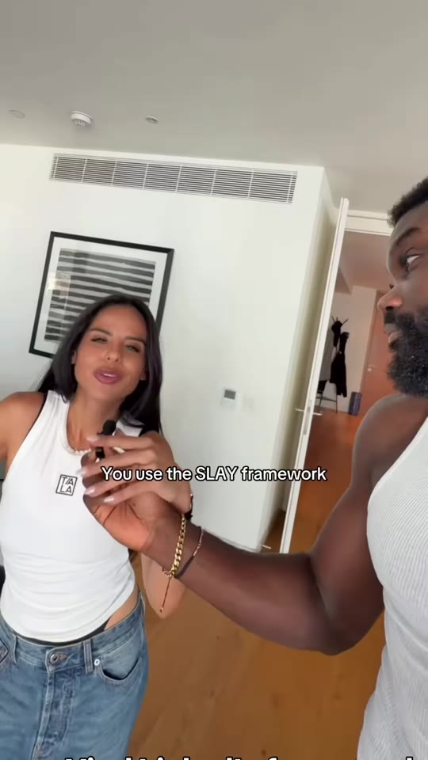
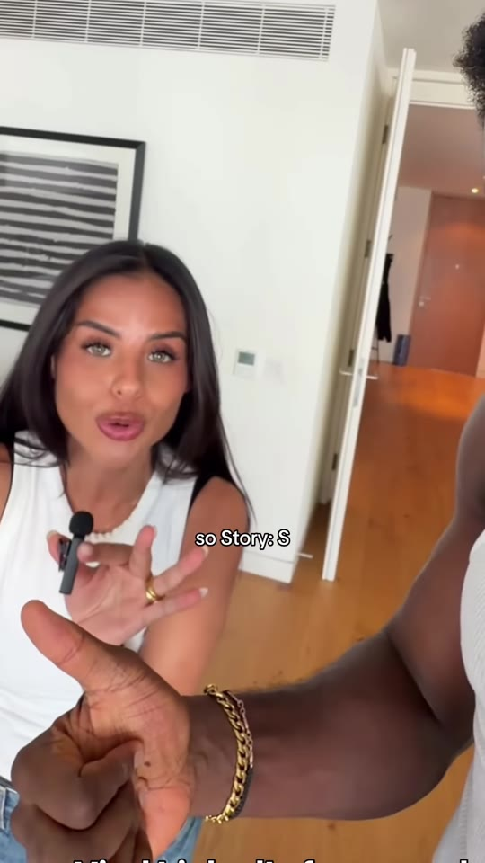
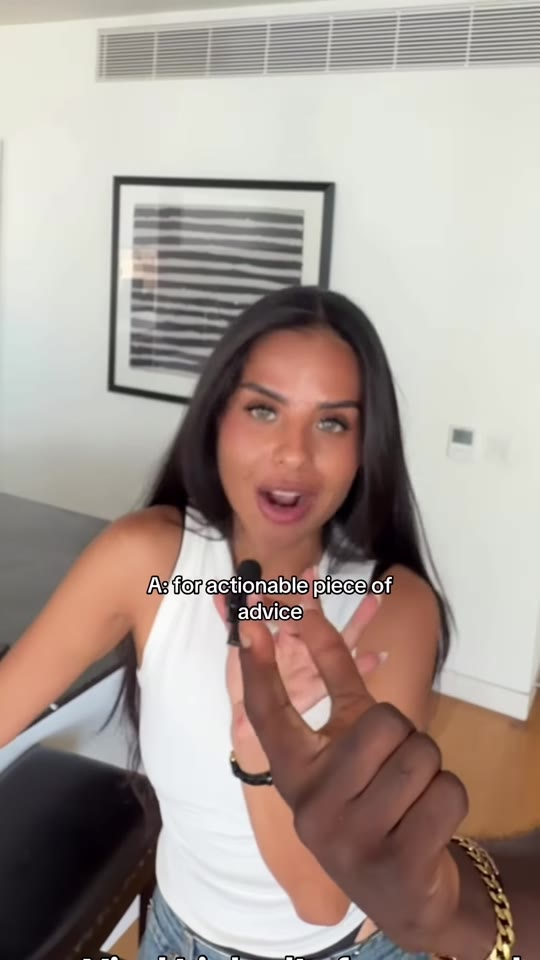
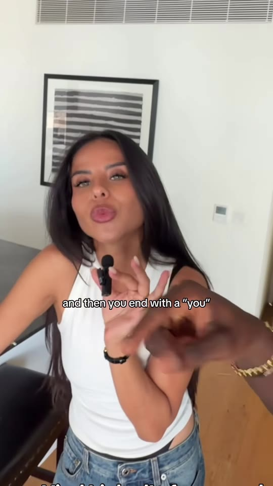

Marketing · LinkedIn-Content
The SLAY Framework: High-Retention Storytelling for Organic LinkedIn Posts
A 4-part copywriting and retention architecture engineered for text-first personal branding on LinkedIn. The SLAY framework balances psychological hook mechanics (stopping the scroll with a personal narrative) with educational utility (delivering actionable steps) and a reader-centric conclusion (shifting the focus to the audience to stimulate high-intent comments).

Steps / Workflow
- S — Story (The Emotional Hook & Context):
- Begin with a vulnerable, high-stakes personal scenario or unexpected observation (1–3 short sentences).
- Function: Interrupts mindless feed browsing, creates an open curiosity loop, and builds immediate human rapport.
- L — Lesson (The Core Principle):
- Distill the underlying insight or hard-won realization discovered through the experience.
- Function: Shifts the post from pure personal narrative into educational value.
- A — Actionable Advice (The Execution Steps):
- Provide concrete, bulleted recommendations or a 3-step checklist that the reader can implement immediately.
- Function: Delivers tangible utility that encourages post bookmarking and sharing.
- Y — “You” (The Audience Hand-Off):
- Conclude by redirecting the prompt directly onto the reader: ask an open-ended question or offer a provocative reflection (e.g. “How are you currently handling [problem] in your workflow?”).
- Function: Unlocks comment section engagement, signaling high dwell time and community discussion to LinkedIn’s ranking algorithm.
Framework Breakdown



Verbatim Breakdown
| Timestamp | Screen / Source | Verbatim Content |
|---|---|---|
00:00 |
Spoken (audio) | “How does anyone go viral on LinkedIn?” |
00:02 |
Spoken (audio) | “You use the SLAY framework. Every time I use this framework, I go viral no matter what, and so do my clients in every single niche. And it’s essentially a storytelling framework.” |
00:11 |
Spoken (audio) | “So you start with SLAY: Story — S... Lesson — L... A for actionable piece of advice... and then you end with a ‘You’.” |
00:18 |
Spoken (audio) | “So that’s what makes a post on LinkedIn engaging enough for people to stop, but then you educate them so they stay. That’s the psychology of every social media platform now, but on LinkedIn with just text only. Try it.” |
(caption) |
Post Caption | (None provided) |
Structure & Formatting Best Practices
- Whitespace & Formatting: Use single-sentence line breaks with double line returns to optimize legibility on mobile devices.
- Hook Line Character Limit: Keep the opening Story hook within the initial 140–180 characters to display above LinkedIn's “...see more” truncation fold.
- No External Links in Post Body: To maximize algorithmic reach, keep external links out of the primary text or place them in the author's pinned top comment.
Try This
- Recall a frustrating professional mistake or technical bug you resolved this quarter.
- Draft Story (S): Write 2 sentences describing the moment everything went wrong.
- Draft Lesson (L): State the 1 core rule you adopted after fixing it.
- Draft Action (A): Bullet out 3 concrete steps anyone on your team must take to prevent it.
- Draft You (Y): Close with: “What is one rule you implemented after your biggest setback?”
Open Questions
- Algorithm shifts on text versus carousels: While text-only posts remain highly resilient for dwell time, LinkedIn periodically boosts multi-slide PDF document carousels; adapting the SLAY framework across slide decks (Slide 1 Hook, Slide 2–3 Story/Lesson, Slide 4–7 Actionable breakdown, Slide 8 CTA) can yield cross-format reach.